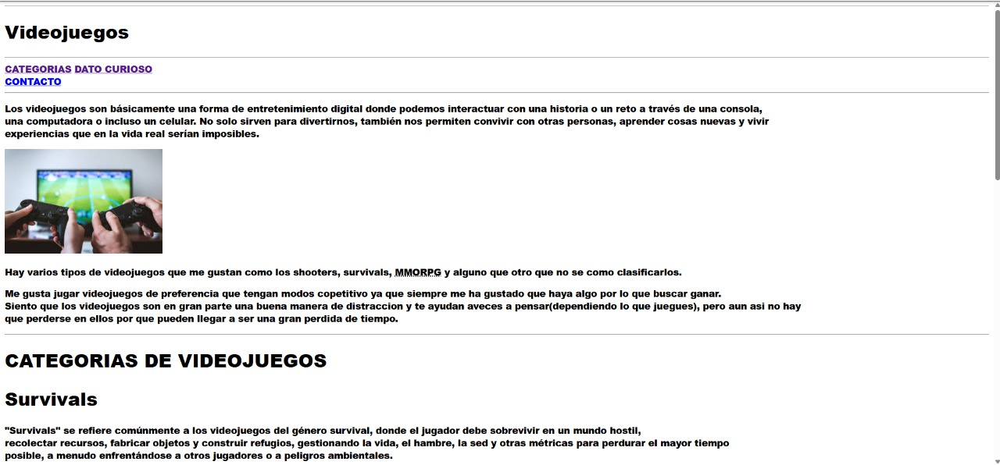
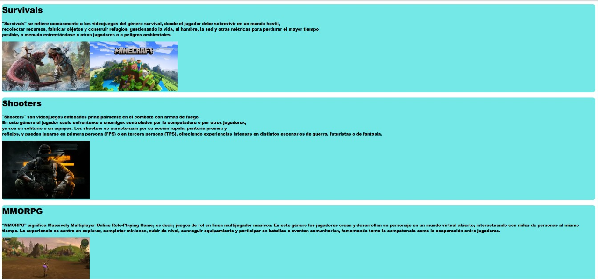
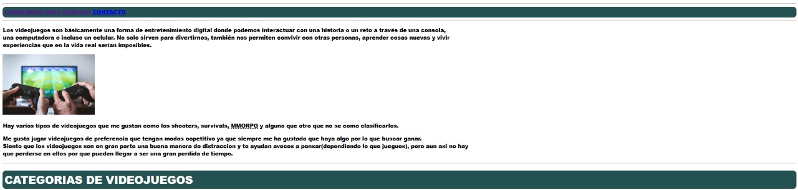
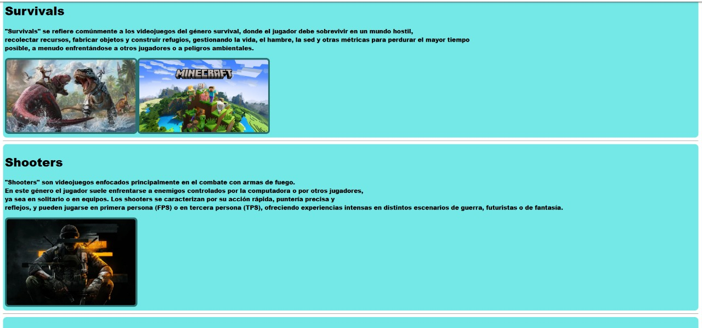
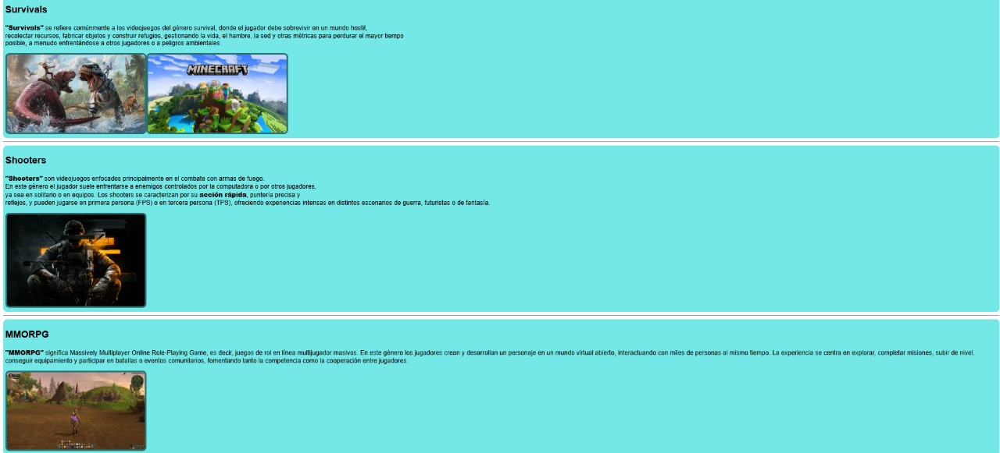
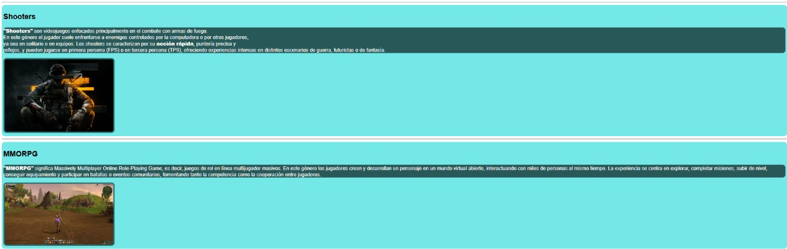

Selector Universal
Este selector agrega stilo a todos los elementos de la pagina
CODIGO EN CSS
Este selector lo utilice para aplicarles la fuente arial black a todos los textos

RESULTADO
Se puede observar que todo el texto fue cambiado por la fuente arial black
Selector de tipo(de etiqueta)
Este selector se utiliza para dar estilo a etiquetas por su nombre
CODIGO EN CSS
Este selector lo utilice para agregar bordes y cambar el color del background a los articles

RESULTADO
Como se observa ya estan agregados los bordes y el color al fondo
Selector de id
Este selector se utiliza para dar estilo a etiquetas por su id
CODIGO EN CSS
Esta etiqueta la utilice para ponerle bordes y modificar el color del background en la barra de navegacion y el titulo de categorias

RESULTADO
Como podemos ver se modificaron los 2 objetivos
Selector por clase
Este selector se utiliza para dar estilo a clases
CODIGO EN CSS
En este caso utilizare el selector para modificar los datos de contacto

RESULTADO
Como se puede observar se ve que ya se modifico el apartado de contacto
Selector de atributo
Este selector se utiliza para dar estilo a etiquetas dependiento su atributo
CODIGO EN CSS
Se utilizo esta etiqueta para darle bordes a las imagenes que tubieran el atributo alt

RESULTADO
Como podemos observar se les agrego un pequeño borde a las imagenes
Selector de lista
Este selector se utiliza para dar estilo a varias etiquetas a la vez
CODIGO EN CSS
Se utilizo esta etiqueta para darle una fuente tanto a los titulos 2 y 3 como a las p

RESULTADO
Como podemos observar se le agrego estilo a los 3 objetivos
Selector de descendientes
Este selector se utiliza para dar estilo a los descendientes
(basicamente a las etiquetas adentro de otras)
CODIGO EN CSS
Se utilizo esta etiqueta para poner en negritas y modificar el tamaño de los parrafos dentro del footer

RESULTADO
Como podemos observar se modifico el tamaño y se pusieron en negritas los parrafos
Selector de hijos directos
Este selector se utiliza para dar estilo a los hijos directos
CODIGO EN CSS
Se utilizo esta etiqueta para modificar el fondo y color de la fuente de los parrafos dentro de la etiqueta article

RESULTADO
Como podemos observar se le agrego estilo a los parrafos por dentro
Selector de hermanos adyacente
Este selector se utiliza para dar estilo a los hermanos
(Basicamente los que le siguen del primer objetivo que le des)
CODIGO EN CSS
Se utilizo esta etiqueta para modificar el tamaño de la fuente de los parrafos despues de un h2

RESULTADO
Como podemos observar que se le modifico el tamaño
Selector de hermano general
Este selector se utiliza para dar estilo a los hermanos en general
(Basicamente todos los que le sigan al que le des)
CODIGO EN CSS
Se utilizo esta etiqueta para modificar el tamaño de la fuente de los parrafos despues de un h1

RESULTADO
Como podemos observar que se le modifico el tamaño